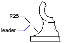

Autodesk AutoCAD 2021: ActiveX Developer's Guide > Dimensions, Leaders, and Geometric Tolerances > About Dimensioning Concepts (VBA/ActiveX) >
A default leader line is a straight line with an arrowhead that refers to a feature in a drawing.
Usually, a leader's function is to connect annotation with the feature. Annotation in this case means paragraph text, blocks, or feature control frames. Such leader lines are different from the simple leader lines AutoCAD creates automatically for radial, diameter, and linear dimensions whose text will not fit between extension lines.

Leader objects are associated with the annotation, so when the annotation is edited, the leader is updated accordingly. You can copy annotation used elsewhere in a drawing and append it to a leader, or you can create a new annotation. You can also create a leader with no annotation appended.